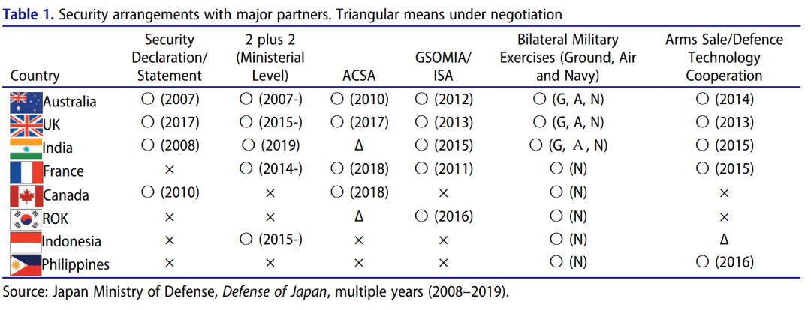
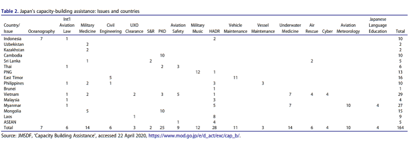

收录于合集
#《国际关系前沿》2022年第2期 8 个
#区域国别 9 个

作品简介 ****
作者： 佐竹 知彦（Tomohiko Satake），日本防卫研究所（National Insititute for Defense Studies，NISD）政策研究部防卫政策研究室主任研究员，主要研究领域为同盟研究、亚太安全保障、日美澳安保合作。佐桥 亮（Ryo Sahashi），东京大学东洋文化研究所（Institute for Advanced Studies on Asia）副教授，主要研究领域为中美关系，东亚安全保障秩序。
编译： 王星澳（国政学人编译员，上海国际问题研究院硕士研究生）
来源： Tomohiko Satake & Ryo Sahashi (2021) The Rise of China and Japan’s ‘Vision’ for Free and Open Indo-Pacific, Journal of Contemporary China , 30:127, 18-35,
DOI: 10.1080/10670564.2020.1766907
归档： 《国际关系前沿》2022年第2期，总第41期。
导读
本文详细论述了在中国崛起、中美博弈日趋激烈的背景下，日本为应对在中美之间“选边”的困境而提出的“自由开放的印太” （Free and Open Indo- Pacific，以下简称“FOIP”）构想。围绕日本为何提出FOIP构想这一问题，本文从日本的视角出发，以定性的方式，反驳了将FOIP视为一种对华制衡政策的观点，强调FOIP的目标并非是制衡中国崛起，而是旨在维持并增强印太地区开放、基于规则的国际秩序。日本试图通过FOIP构想，将印太地区国家整合进一个去美国中心化的地区秩序中，以此缓和中美之间的结构性矛盾，由此揭示FOIP构想对于构建区域新秩序的理论价值。在实现FOIP的过程中，日本可以充分发挥自主性，以开展地区合作，参与地区规则制定的方式提升自身的地位，还可以凭借集体的规则限制中国使用物质性力量，规避因中美结构性矛盾而产生的安全风险。可见，FOIP并非简单地跟随美国的对华政策，它集中体现了日本的国家定位与国家利益，是日本战后外交与安全政策的延续与发展。日本的FOIP构想仍存在着诸多现实困难，包括日本面临着缺乏主导构建该秩序的能力、地区国家缺乏对FOIP的共识问题、日本尚未明确将中国吸收进FOIP框架的战略。若FOIP演变成单纯的地缘政治或地缘经济战略，它也可能加剧地区的分裂。
摘要
学界一般将“自由开放的印太”视为一种对华制衡政策。然而，本文认为日本的FOIP构想寻求维持一种开放且包容的地区秩序，将所有地区国家吸收进一个共同的框架中。为了实现这一构想，日本同其他志同道合的国家合作，大力参与构建地区秩序。然而，这种努力面临着资源短缺、法律约束以及地区共识缺乏的限制。若日本不能应对这些挑战，FOIP将成为一个乌托邦式的幻梦，而非是一种能够防止新冷战、维持地区包容且基于规则的秩序的现实性构想或战略。
编译
01
日本与中美对立的加剧
（一）中美竞争
**
**
在特朗普及其经济民族主义的小圈子推动下，自2018年3月起开始，中美不断互相提升关税。同时，美国政府内的“对华鹰派”开始借机出台强硬政策，强化了对涉华出口、直接投资及移民与政府采购的监管。
中国的深刻影响更体现在社会政治的“操作系统”层面。在中美政策讨论中，人们不再使用“接触”“伙伴”等话语。白宫和一些国会议员已经将中国视为竞争对手。通过将中国置于美国全球战略的核心，美国正在动用其包括同盟、经济政策、政治活动在内的全部能力来同中国竞争。
（二）日本对中美竞争的应对
**
**
自2017年以来，前首相安倍晋三一直尝试同特朗普构建个人关系，以获得对美的议价权（Bargaining Power），由此实现政经事务的分离，为经济谈判争取时间。从这一角度看，2017年2月的日美联合声明是日本的重大胜利。
然而，日本为了对冲特朗普在亚洲的“美国优先”姿态，需要维持同盟关系与地区外交政策之间的脆弱平衡。安倍政府采取了一系列措施改善对华关系，这同美国的强硬对华政策形成了鲜明对比。日本政府也积极扮演中美之间“制定规则的桥梁”的构建者角色。日美对华政策的差异是因为，尽管日本对中国的军事力量有所担忧，但日本不能接受忽视或排挤正在崛起的中国。尤其是，日本试图保持中美日大三角关系的稳定，由此维护其国家安全。因中美及日美关系的稳定、美国在亚洲的存在及美国可信的承诺，中美日三角关系得以维持。 对日本而言，失去三边关系中任意一对关系的稳定都将是巨大的损失。
而且，日本设想通过渐进的方式促使中国转为支持基于规则的国际秩序。毫无疑问的是，当前的美国对华政策在一定程度上符合日本利益。在过去十年，日本一直致力于联合美国制衡中国影响力的上升。然而，经济及政治的对立将加剧地区紧张，迟滞经济发展。因而， 日本试图通过构建一个强力的、可持续的地区秩序来制衡中国。 同美国的方式不同，这种方法关注包容、说服及竞争的作用。
尽管日本的外交实践支撑了美国的霸权，但日本并不必然谋求对华制衡或构建对抗性的秩序。日本在强化同盟关系同时，也应扩大同中国“和平共处”的空间，争取“塑造中国未来的发展模式及政治改革”。 日本的战略并不仅仅是制衡中国，而是一种经济接触（economic engagement）及安全对冲（security hedging）的结合。
02
自由开放的印太构想
（一）何谓FOIP
**
**
根据日本外务省的解释，FOIP是日本旨在于印太地区塑造“基于规则的国际秩序”的一种“构想”而非“战略”。这种秩序基于法制、航行及飞越自由、和平解决争端、推动自由贸易等原则。它是一种开放的秩序，有助于维持东盟的团结及中心地位。为了实现这一目标，外务省强调日本将“同任何支持这一理念的国家合作”，并不限于印度及澳大利亚等地区民主国家。外务省强调，实现FOIP的三支柱包括推动及确立法制、航行自由、自由贸易等原则；通过增强物质、机制及人员的联通，追求经济繁荣；通过能力建设援助（Capacity- Building Assistance，以下简称“CBA”）与人道主义及救灾援助（HA/DR）活动，促进和平与稳定。然而， 日本自二战结束以来便一直追求这些目标，FOIP实际上并无太多新意。
（二）为何在现在（提出FOIP）？
**
**
若FOIP新意寥寥，为何日本政府还要重点强调它？简言之，日本认为中国的崛起及美国的相对衰弱违背日本利益，影响地区秩序。为了维持地区现状，日本需要强化同美、印、澳的安全合作。然而，这并不意味着FOIP仅仅是一个地缘政治或地缘经济的对华制衡政策。为了避免修昔底德陷阱（the Thucydides’ Trap），日本必须寻找更广阔的空间以容纳崛起国与守成国。
日本将亚太的概念向印太拓展，正是为了拓展这一地区的战略空间。在亚太，美国是主导性的经济政治力量。而在印太，行为体更加多元化，各地区国家乃至域外国家都参与维持该地区的基于规则的秩序。实际上，日本已经在维持紧密日美关系的同时，强化了同地区国家的战略伙伴关系（参见图表1）。

因此，尽管FOIP本身并无新意，但 追求FOIP构想有利于构建一种非美国中心的地区秩序。 美国将继续扮演地区秩序的重要角色，而其他地区中等国家也将为塑造地区秩序承担更大责任。 最终将中俄整合进这一框架是FOIP的根本目标。 因此，在理论上，FOIP是众多地区国家共同参与的开放式构想，在FOIP构想下，所有国家都不必在中美之间“选边站队”。
03
FOIP的构成及局限性
（一）FOIP的构成
**
**
第一，确保航行自由。确保航行自由是FOIP的重点之一。尽管日本并未直接加入美国主导的航行自由行动（Freedom of Navigation Operations, FONOPS），但日本海上自卫队自2015年起频繁停靠东南亚及印度洋国家港口，参与同这些国家的联合军事训练。航空自卫队与陆上自卫也增强了其在印太的活动。日本还通过QUAD等多边或双边合作追求这一目标，其合作范围甚至涵盖了英法等域外国家。
第二，提升地区韧性及联通性。印太国家面临着恐怖主义、自然灾害等风险及威胁，这些威胁可能动摇国家治理稳定，诱发地区动荡或冲突。因而，降低地区国家的脆弱性，鼓励它们可持续且自主地发展是FOIP的另一重点。为此，日本同美澳等志同道合的国家（Like- Minded Countries）合作，增强了对印太国家的CBA。从图表2可见，日本的CBA侧重于非传统安全领域， 日本CBA的目标并不直接针对中国，而是旨在提升地区韧性以适应中国的崛起。

第三，规则制定与标准设定。共享人权、民主等价值观是日本外交政策的一大目标。不过相较于“自由与繁荣之弧”（Arc of Freedom and Prosperity, AFP），日本政府在FOIP构想下较少提及这些价值观。AFP的价值观导向引发了普遍的担忧和批评，认为日本试图构建排除拥有不同价值观和意识形态的国家的秩序。因此，FOIP强调规则、标准以及所有地区国家都接受的原则。为此，日本加强了在不同领域制定规则和设定标准的努力。
作为一个自然资源稀少且能力受限的国家，日本只能在基于规则的秩序下维持和平与繁荣。诚然， 日本是战后从自由贸易体系和这种规则中获益最大的国家之一。 因此，日本在FOIP构想中频繁强调法制的重要性。需要指出的是，日本提倡规则制定和标准设定并非是理想主义的，而是基于其在维持理想国际秩序中明确的战略优势。在这种秩序下，物质性力量的行使将受到多边机制、规则和标准的限制和管束。
（二）FOIP的局限性
**
**
第一，物质性和规则性限制。FOIP构想首先面临着资源缺乏问题。日本政府提升防卫预算的速度远低于地区其他国家，日本自卫队缺乏维护和维修资源。而且，自卫队还面临着严重的初级军官不足问题，这使得自卫队的年龄结构极度不平衡。
而且，自卫队的海外活动还受到法律限制，这使得日本难以深化与志同道合的国家的战略合作伙伴关系，也难以维持对等的同盟关系。日本若要获得集体自卫权（Collective Self-defense），还需修改宪法，而这需要获得参众两院的绝对多数及全民公投中的相对多数支持。
第二，缺少地区共识。日本也难以就FOIP达成国际共识。东盟、印度及韩国各自的方式都与日本不同。各个国家对理想地区秩序的认识不同，而且它们还希望按照其内政外交的诉求对印太概念进行调整。这使得形成一个可以整合地区各国家力量的构想极其困难，也使得“印太”难以发展为区域性的概念。
从长期来看，将中国吸收进基于规则的秩序将是FOIP最重要的目标。然而截至目前，中国并未展现出对FOIP的兴趣。若FOIP仅仅旨在“留住美国、抬高印度、排斥中国”，那中国也不可能认同这一构想。
04
结论
不同于将FOIP视为日本的对华制衡政策的观点，本文认为，日本的FOIP旨在维持开放且包容的地区秩序，试图将所有的地区国家吸收进一个共同的框架中。FOIP旨在增强地区的韧性和连通性，从而使这一地区在未来成功适应中国的崛起。为实现这一目标，日本加强了其防卫、经济和外交活动，旨在联合志同道合的国家构建自由且开放的地区秩序。
确实，日本在FOIP构想下的活动是其战后外交及安全政策的延续。日本坚定地支持美国在这一地区的优势，并对中国采取接触政策。同时，日本更加独立和积极地参与构建地区秩序可能降低其对美国的依赖，提升地区的自主性，并且创造一个维持基于规则的地区秩序的集体性机制。这可以缓和中美博弈的影响，使得印太秩序更加多极化。
然而，要实现FOIP还需克服上文所述的诸多困难。由于日本长期的经济衰退及老龄化问题，日本可调配的资源严重受限，日本目前的FOIP政策的可持续性需要重新审视。日本安全政策依旧受到法律的束缚，这意味着日本无法独自实现FOIP，而需要同地区盟友及伙伴紧密合作。然而，印太地区对于FOIP的内涵及实现路径缺乏共识，日本也尚未制定出将中国吸纳进FOIP的清晰的长期战略。若日本不能应对这些挑战，FOIP将成为一个乌托邦式的幻梦，而非是一种能够防止新冷战、维持地区包容且基于规则秩序的现实性构想或战略。
词汇整理
议价权 Bargaining Power
修昔底德陷阱 the Thucydides’ Trap
集体自卫权 Collective Self-defense
志同道合的国家 Like-Minded Countries
对冲策略 Hedging
接触政策 Engagement
审校 | 吕紫烟 杨沛鑫
排版 | 黄紫蓝 云琪布日
文章观点不代表本平台观点，本平台评译分享的文章均出于专业学习之用, 不以任何盈利为目的，内容主要呈现对原文的介绍，原文内容请通过各高校购买的数据库自行下载。

国政学人
支持学术公益与知识传播
微信扫一扫赞赏作者 __赞赏
已喜欢，对作者说句悄悄话
取消 __
发送给作者
发送
最多40字，当前共字
上一页 1/3 下一页
长按二维码向我转账
支持学术公益与知识传播
受苹果公司新规定影响，微信 iOS 版的赞赏功能被关闭，可通过二维码转账支持公众号。